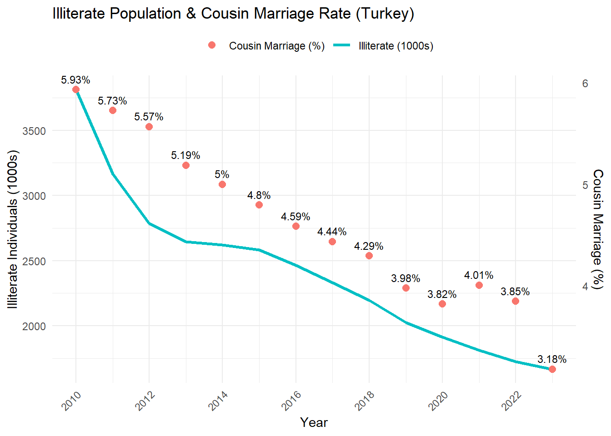

The Relationship Between Educational Level and The Number of First Cousin Marriages
Welcome to my project page.
Keep an eye on this space to stay updated with my project activities.
1. Project Overview and Scope
In this project, I am investigating the relationship between the level of education and the change in first cousin marriages over time in 81 provinces of Turkey. Specifically, I am testing the hypothesis that provinces with higher secondary and higher education completion rates exhibit lower cousin marriage rates.
Exported from the Turkish Statistical Institute database, this table contains, for each province and year, the total number of marriages, the number of marriages between first cousins, and the proportion of cousin marriages (%). Coverage: 2010-2024.
Also from TUIK, this table provides the count of individuals by education level (illiterate, literate without diploma, primary school, secondary school, high school & equivalents, universities, master, doctorate) and sex, for each province and year. Coverage: 2010-2023.
2.2 General Information About Data
Cousin Marriage Dataset
Columns per year: total marriages, cousin marriages, and cousin-marriage proportion (%)
Rows: 81 provinces/14 years
Education Dataset
Columns: year, province code & name, total population by education level and sex
Education levels: illiterate, literate without diploma, primary, lower secondary, high school, universities, master, doctorate,unknown
Rows: 81 provinces /8 education categories with 2 sexes / 15 years
2.3 Reason of Choice
chose these data sets because it is necessary to examine the level of education from both a cultural and social (inbreeding) point of view. Demonstrating an inverse relationship between education levels and cousin-marriage rates may support targeted interventions in areas with low education levels. Moreover, provincial granularity offers insights into regional policy needs.
2.4 Preprocessing
Loading & Header Processing
Read both Excel files using readxl::read_excel(..., col_names = FALSE) to preserve raw header rows.
When the data obtained from TUIK are examined without manipulation, it is seen that its structure is not suitable for reading in R.
I have brought two data into tidy form by making Reshaping to make it tidy
Education Data Tidy
Clean headers and reshape education data into (Province, Year, Education_level_sex,) Cousin Marriage Data Tidy Similarly clean headers and reshape cousin marriage data into (Province, Year, Number of marriages, Number of marriages between first cousins, Proportion of marriages between first cousins (%))
In the same way, it was shown how the percentage of first cousin marriages in Turkey varies by year.
library(ggplot2)library(dplyr)library(stringi)combined_data |>mutate(Province =stri_trans_general(Province, "Latin-ASCII"),Province =tolower(Province)) |>filter(Province =="turkiye") |>mutate(Year =as.numeric(Year)) |>ggplot(aes(x = Year, y = Proportion)) +geom_point(color ="steelblue") +geom_text(aes(label =paste0(round(Proportion, 2), "%")),hjust=-0.3, vjust =-0.3, size =3) +scale_x_continuous(breaks =seq(2010, 2024, by =2)) +labs(title ="Turkey - First Cousin Marriage Percentage Over Years",x ="Year", y ="Percentage") +theme_minimal() +theme(axis.text.x =element_text(angle =45, hjust =1) )
The increase after 2020 is thought to be because people could not socialize after the global pandemic and spent time with their closest acquaintances.
3.3 Model Fitting
To observe the compatibility of the two data models, first of all, the data according to the increase in the level of education for Turkey.
3.3.1 Illiterate Population & Cousin Marriage Rate
The data suggests a possible positive association between the proportion of illiterate individuals and cousin marriage rates in Turkey. As literacy improves over time, a downward shift in consanguineous marriage patterns can be observed.
Warning: Using `size` aesthetic for lines was deprecated in ggplot2 3.4.0.
ℹ Please use `linewidth` instead.
Warning: The `trans` argument of `sec_axis()` is deprecated as of ggplot2 3.5.0.
ℹ Please use the `transform` argument instead.

3.3.2 Primary School Graduates & Cousin Marriage (%)
The expansion of primary education in Turkey has played a key role in shaping social behaviors. This chart shows that increases in primary school graduation are associated with reductions in cousin marriage rates over time.
In Turkey, as the number of high school graduates has increased steadily over the years, the rate of cousin marriages has shown a noticeable decline. This trend implies a possible inverse relationship between secondary education completion and consanguineous marriage practices.
3.5.5 Universities Graduates & Cousin Marriage (%)
Over the years, as the number of university graduates in Turkey increased, a steady decline in the rate of cousin marriages can be observed. This trend suggests a potential negative correlation between higher education attainment and consanguineous marriage preferences.
3.5.5 Master???s Degree Graduates & Cousin Marriage (%)
A rising trend in master???s degree graduations appears to align with a gradual decrease in cousin marriage rates. This relationship may indicate that individuals with postgraduate education are less likely to engage in consanguineous marriages.
As the number of individuals attaining doctoral degrees increases, cousin marriage rates show a significant downward trend. This supports the hypothesis that advanced education is inversely associated with traditional marriage practices such as consanguinity.
The animated maps below illustrate the spatial distribution of high school and higher education graduates across Turkish provinces over time. Color gradients represent the number of graduates (in thousands), while the labels highlight the top five and bottom five provinces each year.
This animated map shows how cousin marriage rates change across provinces in Turkey over the years. Darker colors mean higher rates. We can see that eastern and southeastern provinces usually have the highest rates, while western provinces have much lower ones.
harita_evlilik <-expand.grid(il_adi =unique(turkiye$il_adi), Year =unique(combined_data$Year)) |>left_join(combined_data |>mutate(il_adi =tolower(stri_trans_general(Province, "Latin-ASCII"))),by =c("il_adi", "Year")) |>left_join(turkiye, by ="il_adi") |>st_as_sf()etiketler_evlilik <- harita_evlilik |>group_by(Year) |>mutate(sira =rank(Proportion, ties.method ="first"),etiket =case_when( sira <=5| sira >= (n() -4) ~paste0(round(Proportion, 1), "%"),TRUE~NA_character_),x =st_coordinates(st_centroid(geometry))[,1],y =st_coordinates(st_centroid(geometry))[,2],x =ifelse(il_adi =="istanbul", x +1.5, x),y =ifelse(il_adi =="istanbul", y +1.0, y) ) |>ungroup()p_evlilik <-ggplot(etiketler_evlilik) +geom_sf(aes(fill = Proportion, geometry = geometry), color ="white", linewidth =0.2) +geom_text(data =subset(etiketler_evlilik, !is.na(etiket)),aes(x = x, y = y, label = etiket),size =3, color ="black") +scale_fill_distiller(palette ="YlOrRd",direction =1,na.value ="grey90",name ="Proportion (%)",labels =waiver())+labs(title ="{closest_state} ??? Consanguineous Marriage Rate by Province",fill ="Proportion" ) +theme_minimal() +transition_states(Year, transition_length =2, state_length =1) +ease_aes("cubic-in-out")
In this analysis, we wanted to see if education levels have an effect on cousin marriage rates in Turkey. For this, we built a regression model where the cousin marriage rate is the outcome, and the shares of high school, university, master???s, and PhD graduates are the predictors.
The results show that provinces with a higher percentage of only high school graduates tend to have higher cousin marriage rates. On the other hand, places with more universities, master???s, and especially PhD graduates tend to have lower rates.
This supports the idea that as education level increases, cousin marriage becomes less common. While the model doesn???t explain everything (since cultural factors also matter), it still gives a clear overall pattern.
Call:
lm(formula = Proportion ~ hs_ratio + uni_ratio + master_ratio +
phd_ratio, data = combined_data)
Residuals:
Min 1Q Median 3Q Max
-7.4538 -2.4797 -0.8696 1.5759 12.2465
Coefficients: (1 not defined because of singularities)
Estimate Std. Error t value Pr(>|t|)
(Intercept) -543.47 54.89 -9.901 <2e-16 ***
hs_ratio 557.66 55.02 10.136 <2e-16 ***
uni_ratio 539.25 55.12 9.784 <2e-16 ***
master_ratio 563.43 63.95 8.811 <2e-16 ***
phd_ratio NA NA NA NA
---
Signif. codes: 0 '***' 0.001 '**' 0.01 '*' 0.05 '.' 0.1 ' ' 1
Residual standard error: 3.441 on 1144 degrees of freedom
Multiple R-squared: 0.2071, Adjusted R-squared: 0.2051
F-statistic: 99.62 on 3 and 1144 DF, p-value: < 2.2e-16
In this regression model, we examined how the relative share of graduates at different education levels affects cousin marriage rates. The dependent variable is the cousin marriage proportion, and the predictors are the ratios of high school, university, master???s, and PhD graduates among all graduates.
The results show that high school, university, and master???s graduate shares are all positively associated with cousin marriage rate. Surprisingly, the coefficient signs are all positive, but the interpretation depends on the structure of the ratios.
The coefficient for phd_ratio is marked as NA due to perfect multicollinearity ??? meaning its value is automatically determined by the others and cannot be estimated separately. This happens because the ratios sum to 1, so one of them must be dropped from the model.
The model explains around 20.5% of the variation in cousin marriage rates (Adjusted R?? = 0.205), which is reasonable given that cultural and regional factors are not included. The model is statistically significant overall (p < 0.001).